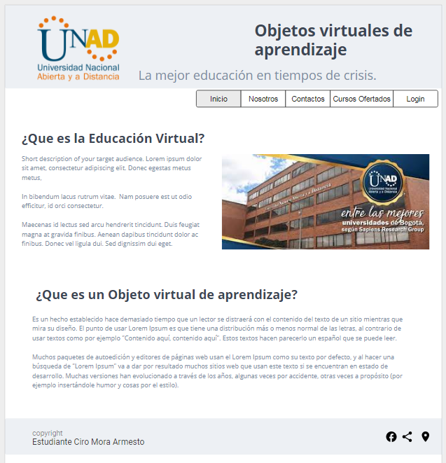

con un párrafo donde se describa el propósito de este sitio, de acuerdo con el tema seleccionado.
Agregar una etiqueta "article" , dentro de ella redactar un primer borrador con los contenidos que se publicarán en el sitio web, debidamente citados y referenciados con norma APA, al igual que al menos una imagen que ilustre los temas que se abordan
en el sitio.
